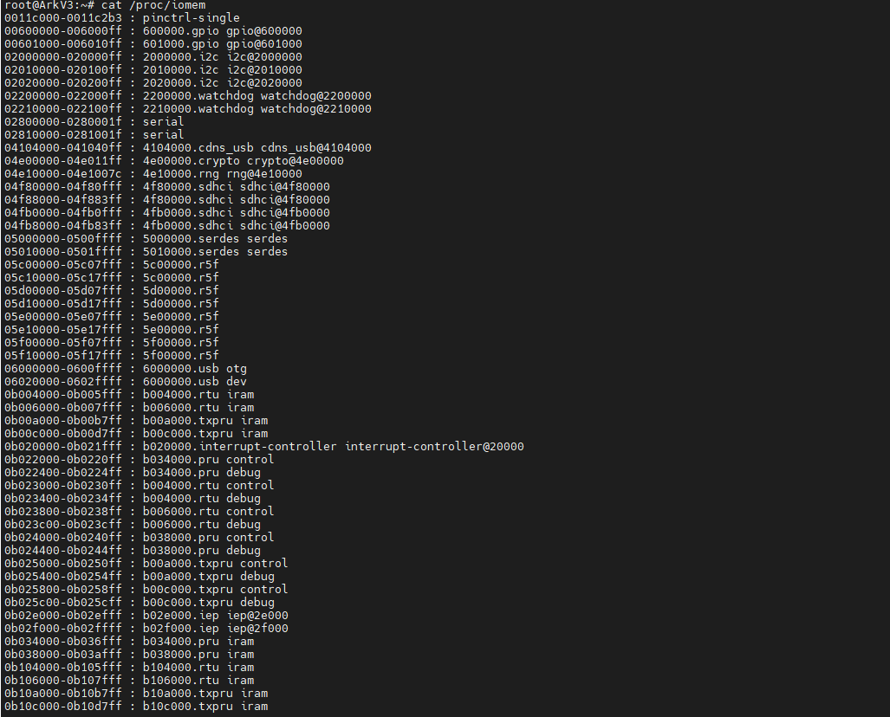

4.1.1. platform总线
4.1.1.1. 概述
嵌入式系统中有很多物理总线: i2c、spi、USB、uart、PCIE等。linux中引入了一种驱动管理和注册的机制platform平台总线，它是一条虚拟的总线，并不是一个物理的总线。 相比于PCI、USB等它主要用于描述SOC上的片上资源，platform所描述的资源有一个共同点:在CPU的总线上直接取址
platform总线相关代码: driver/base/platform.c
相关结构体定义: include/linux/platform_device.h
4.1.1.2. 数据结构
resource结构体保存了设备资源信息
//include/linux/ioport.h
struct resource {
resource_size_t start; //资源起始地址
resource_size_t end; //资源结束地址
const char *name;
unsigned long flags; //资源类型
struct resource *parent, *sibling, *child;
};
platform_device
//include/linux/platform_device.h
struct platform_device {
const char *name; //设备的名字
int id; //ID 是用来区分如果设备名字相同的时候
bool id_auto;
struct device dev; //设备结构
u32 num_resources; //resource结构个数
struct resource *resource; //设备资源
const struct platform_device_id *id_entry;
/* MFD cell pointer */
struct mfd_cell *mfd_cell;
/* arch specific additions */
struct pdev_archdata archdata;
};
platform_driver
struct platform_driver {
int (*probe)(struct platform_device *); //探测函数，在注册平台设备时被调用
int (*remove)(struct platform_device *); //删除函数，在注销平台设备时被调用
void (*shutdown)(struct platform_device *);
int (*suspend)(struct platform_device *, pm_message_t state);
int (*resume)(struct platform_device *);
struct device_driver driver; //设备驱动结构
const struct platform_device_id *id_table;//该设备驱动支持的设备的列表
bool prevent_deferred_probe;
};
4.1.1.3. resource
linux platform驱动中常见的几种资源如下:
#define IORESOURCE_IO 0x00000100 /* PCI/ISA I/O ports */
#define IORESOURCE_MEM 0x00000200
#define IORESOURCE_REG 0x00000300 /* Register offsets */
#define IORESOURCE_IRQ 0x00000400
#define IORESOURCE_DMA 0x00000800
#define IORESOURCE_BUS 0x00001000
我们主要分析前三种资源，即IO，MEM，REG
几乎每一种外设都是通过读写设备上的寄存器来进行的，外设的寄存器通常被连续的编址。根据CPU体系结构的不同，CPU对IO端口的编址方式有两种
I/O映射方式(I/O-mapped)
典型的，如X86处理器为外设专门实现了一个单独的地址空间，称为i/o地址空间或i/o端口空间
内存映射方式(memory-mapped)
RISC指令系统的CPU(如ARM)通常只实现一个物理地址空间，像这种情况，外设的I/O端口的物理地址就被映射到内存地址空间中，外设I/O端口称为内存的一部分。此时CPU可以像访问一个内存单元 那样去访问外设I/O端口，而不需要设立专门的外设I/O指令
我们先分析一下资源树的总信息，然后再分析如何把资源加入到资源树中
[kernel/resource.c]
struct resource ioport_resource = {
.name = "PCI IO",
.start = 0,
.end = IO_SPACE_LIMIT,
.flags = IORESOURCE_IO,
};
EXPORT_SYMBOL(ioport_resource);
struct resource iomem_resource = {
.name = "PCI mem",
.start = 0,
.end = -1,
.flags = IORESOURCE_MEM,
};
EXPORT_SYMBOL(iomem_resource);
可以使用 cat /proc/iomem 来查看已经插入的资源

实际的插入动作由 __insert_resource函数完成
/*
* Insert a resource into the resource tree. If successful, return NULL,
* otherwise return the conflicting resource (compare to __request_resource())
*/
static struct resource * __insert_resource(struct resource *parent, struct resource *new)
{
struct resource *first, *next;
/* 注意这里是个循环,失败了也是会继续更新parrnt尝试插入的,除非返回值为NULL,或new相对与parent无效 */
for (;; parent = first) {
first = __request_resource(parent, new); /* 返回NULL表示已经插入 */
if (!first)
return first; /* NULL表示已经插入,这里直接返回 */
if (first == parent) /* 插入的超过root范围或插入范围无效 */
return first;
if (WARN_ON(first == new)) /* duplicated insertion 重复插入个资源 */
return first;
/* 失败节点,的start大于new->start 或 失败节点的end小于new->end*/
if ((first->start > new->start) || (first->end < new->end))
break;
/* new和某段资源重复了 */
if ((first->start == new->start) && (first->end == new->end))
break;
}
/* 到这里表示通过break出来的,即要插入的资源和资源池里面的资源有重叠 */
for (next = first; ; next = next->sibling) {
/* Partial overlap? Bad, and unfixable,部分重叠会认为是bad, */
if (next->start < new->start || next->end > new->end)
return next;
if (!next->sibling)
break;
if (next->sibling->start > new->end) /* 找到的某个资源的start大于new->end,即new资源整个都小于next->siblig,即可能可以做next->siblig节点的child */
break;
}
new->parent = parent; /* new的parent指向根节点 */
new->sibling = next->sibling; /* new的sibling指向上一个节点(new < next) */
new->child = first; /* 挂接属于new范围内的资源到new里面 */
next->sibling = NULL;
for (next = first; next; next = next->sibling)
next->parent = new;
if (parent->child == first) {
parent->child = new;
} else {
next = parent->child;
while (next->sibling != first)
next = next->sibling;
next->sibling = new;
}
return NULL;
}
几个常用的资源注册函数
[lib/devres.c]
/**
* devm_ioremap_resource() - check, request region, and ioremap resource
* @dev: generic device to handle the resource for
* @res: resource to be handled
*
* Checks that a resource is a valid memory region, requests the memory
* region and ioremaps it. All operations are managed and will be undone
* on driver detach.
*
* Returns a pointer to the remapped memory or an ERR_PTR() encoded error code
* on failure. Usage example:
*
* res = platform_get_resource(pdev, IORESOURCE_MEM, 0);
* base = devm_ioremap_resource(&pdev->dev, res);
* if (IS_ERR(base))
* return PTR_ERR(base);
*/
void __iomem *devm_ioremap_resource(struct device *dev,
const struct resource *res)
{
resource_size_t size;
void __iomem *dest_ptr;
BUG_ON(!dev);
//通常ioremap的都是mem资源，如果不是则退出
if (!res || resource_type(res) != IORESOURCE_MEM) {
dev_err(dev, "invalid resource\n");
return IOMEM_ERR_PTR(-EINVAL);
}
size = resource_size(res); //得到资源的大小
//请求资源
if (!devm_request_mem_region(dev, res->start, size, dev_name(dev))) {
dev_err(dev, "can't request region for resource %pR\n", res);
return IOMEM_ERR_PTR(-EBUSY);
}
//ioremap映射物理地址到虚拟地址
dest_ptr = devm_ioremap(dev, res->start, size);
if (!dest_ptr) {
dev_err(dev, "ioremap failed for resource %pR\n", res);
devm_release_mem_region(dev, res->start, size);
dest_ptr = IOMEM_ERR_PTR(-ENOMEM);
}
return dest_ptr;
}
EXPORT_SYMBOL(devm_ioremap_resource);
#define devm_request_mem_region(dev,start,n,name) \
__devm_request_region(dev, &iomem_resource, (start), (n), (name))
struct resource *
__devm_request_region(struct device *dev, struct resource *parent,
resource_size_t start, resource_size_t n, const char *name)
{
struct region_devres *dr = NULL;
struct resource *res;
//申请空间，管理资源
dr = devres_alloc(devm_region_release, sizeof(struct region_devres),
GFP_KERNEL);
if (!dr)
return NULL;
dr->parent = parent; //初始化
dr->start = start;
dr->n = n;
res = __request_region(parent, start, n, name, 0);
if (res)
devres_add(dev, dr); //把申请到的资源加入到该设备中
else
devres_free(dr);
return res;
}
EXPORT_SYMBOL(__devm_request_region);
/**
* __request_region - create a new busy resource region
* @parent: parent resource descriptor
* @start: resource start address
* @n: resource region size
* @name: reserving caller's ID string
* @flags: IO resource flags
*/
struct resource * __request_region(struct resource *parent,
resource_size_t start, resource_size_t n,
const char *name, int flags)
{
DECLARE_WAITQUEUE(wait, current);
struct resource *res = alloc_resource(GFP_KERNEL);
if (!res)
return NULL;
//填充资源信息
res->name = name;
res->start = start;
res->end = start + n - 1;
write_lock(&resource_lock);
for (;;) {
struct resource *conflict;
res->flags = resource_type(parent) | resource_ext_type(parent);
res->flags |= IORESOURCE_BUSY | flags;
res->desc = parent->desc;
conflict = __request_resource(parent, res);
if (!conflict)
break;
/*
* mm/hmm.c reserves physical addresses which then
* become unavailable to other users. Conflicts are
* not expected. Warn to aid debugging if encountered.
*/
if (conflict->desc == IORES_DESC_DEVICE_PRIVATE_MEMORY) {
pr_warn("Unaddressable device %s %pR conflicts with %pR",
conflict->name, conflict, res);
}
if (conflict != parent) {
if (!(conflict->flags & IORESOURCE_BUSY)) {
parent = conflict;
continue;
}
}
//如果这个资源是多个设备使用的话，把这个设备加入到等待队列，资源可用时再唤醒
if (conflict->flags & flags & IORESOURCE_MUXED) {
add_wait_queue(&muxed_resource_wait, &wait);
write_unlock(&resource_lock);
set_current_state(TASK_UNINTERRUPTIBLE);
schedule();
4.1.1.4. platform_device注册
[drivers/base/platform.c]
int platform_device_register(struct platform_device *pdev)
{
device_initialize(&pdev->dev);
|--dev->kobj.kset = devices_kset;
|--kobject_init(&dev->kobj, &device_ktype);
|--INIT_LIST_HEAD(&dev->dma_pools);
|--mutex_init(&dev->mutex);
|--lockdep_set_novalidate_class(&dev->mutex);
|--spin_lock_init(&dev->devres_lock);
|--INIT_LIST_HEAD(&dev->devres_head);
|--device_pm_init(dev);
|--set_dev_node(dev, -1);
|--INIT_LIST_HEAD(&dev->links.consumers);
|--INIT_LIST_HEAD(&dev->links.suppliers);
|--dev->links.status = DL_DEV_NO_DRIVER;
arch_setup_pdev_archdata(pdev);
return platform_device_add(pdev);
}
int platform_device_add(struct platform_device *pdev)
{
u32 i;
int ret;
if (!pdev)
return -EINVAL;
if (!pdev->dev.parent)
pdev->dev.parent = &platform_bus; //设置总线的父设备为平台设备
pdev->dev.bus = &platform_bus_type; //设备挂接在平台总线下
switch (pdev->id) {
default: //设置设备标号
dev_set_name(&pdev->dev, "%s.%d", pdev->name, pdev->id);
break;
case PLATFORM_DEVID_NONE: //-1表示不需要设备标号
dev_set_name(&pdev->dev, "%s", pdev->name);
break;
case PLATFORM_DEVID_AUTO: //由总线自行分配
/*
* Automatically allocated device ID. We mark it as such so
* that we remember it must be freed, and we append a suffix
* to avoid namespace collision with explicit IDs.
*/
ret = ida_simple_get(&platform_devid_ida, 0, 0, GFP_KERNEL);
if (ret < 0)
goto err_out;
pdev->id = ret;
pdev->id_auto = true;
dev_set_name(&pdev->dev, "%s.%d.auto", pdev->name, pdev->id);
break;
}
//对该设备的资源插入资源树
for (i = 0; i < pdev->num_resources; i++) {
struct resource *p, *r = &pdev->resource[i];
if (r->name == NULL)
r->name = dev_name(&pdev->dev); //如果没有设置资源名字则和设备名一样
p = r->parent;
if (!p) {
if (resource_type(r) == IORESOURCE_MEM) //如果没有父节点则检查资源是否是MEM或者IO
p = &iomem_resource; //iomem资源树
else if (resource_type(r) == IORESOURCE_IO)
p = &ioport_resource;
}
if (p) {
ret = insert_resource(p, r); //插入资源
if (ret) {
dev_err(&pdev->dev, "failed to claim resource %d: %pR\n", i, r);
goto failed;
}
}
}
pr_debug("Registering platform device '%s'. Parent at %s\n",
dev_name(&pdev->dev), dev_name(pdev->dev.parent));
//增加设备，节点，sysfs信息
ret = device_add(&pdev->dev);
if (ret == 0)
return ret;
failed:
if (pdev->id_auto) {
ida_simple_remove(&platform_devid_ida, pdev->id);
pdev->id = PLATFORM_DEVID_AUTO;
}
while (i--) {
struct resource *r = &pdev->resource[i];
if (r->parent)
release_resource(r);
}
err_out:
return ret;
}